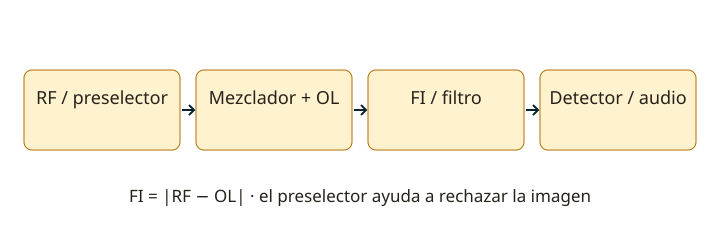

Lección 12 de 16
Receptores y superheterodino
Aprende a distinguir una señal débil, una interferencia próxima y una respuesta imagen, y a seguir los bloques de recepción.
Qué debe hacer un receptor
El receptor selecciona una señal, la amplifica, demodula y reproduce la información. Sensibilidad indica la capacidad de recibir señales pequeñas bajo un criterio de señal/ruido; selectividad, la de separar señales próximas; estabilidad, la de mantener sintonía; fidelidad, la de reproducir la información. El rango dinámico describe la relación entre niveles manejables. Un receptor muy sensible puede quedar limitado por señales fuertes cercanas si sus etapas se sobrecargan.
De RF a frecuencia intermedia
Un superheterodino mezcla la señal recibida con un oscilador local y selecciona una frecuencia intermedia o FI. Allí puede aplicar amplificación y filtrado constantes aunque cambie la sintonía. El mezclador produce sumas, diferencias y otros productos; un filtro selecciona el previsto. El preselector de RF ayuda a rechazar señales antes de que lleguen a mezclador y amplificadores.

Oscilador local y frecuencia imagen
Para conversión por diferencia, fFI = |fRF−fOL|. Dos frecuencias de entrada, una a cada lado del oscilador local, pueden producir la misma FI. Si el oscilador está por encima de la señal deseada, la imagen está otros dos FI por encima de esa señal; si está por debajo, la ubicación cambia. Dibuja la recta de frecuencias y resuelve el valor absoluto, en lugar de sumar 2FI sin comprobar el lado.
Detectores y controles
Un detector de envolvente puede recuperar AM apropiada; un discriminador recupera FM; un detector de producto con referencia recupera SSB o CW. El control automático de ganancia (AGC) reduce la variación de nivel a través de la cadena y evita algunas sobrecargas. El control automático de frecuencia (AFC) corrige ciertos errores de sintonía. El squelch silencia el audio bajo una condición; cerrarlo más no mejora la sensibilidad del receptor.
Ruido, filtros y respuesta
La relación señal/ruido compara potencias, normalmente en dB. La figura de ruido describe cuánto empeora un bloque esa relación respecto a una entrada definida. Reducir el ancho de recepción disminuye ruido integrado, pero si es demasiado estrecho recorta la información. Un filtro de FI protege mejor etapas posteriores; la saturación anterior a ese filtro puede seguir produciendo intermodulación. Un atenuador puede mejorar la recepción cuando hay sobrecarga, aunque también atenúe la señal deseada.
Medir y diagnosticar
Una prueba de sensibilidad necesita generador calibrado, nivel conocido y criterio como SINAD o señal/ruido. La lectura del S-meter no sustituye esa prueba. Si todas las señales desaparecen, revisa antena, alimentación, conmutación y configuración antes de atribuirlo a propagación. Si aparece una señal en dos lugares separados, calcula si podría ser imagen o producto espurio. Cambia filtros, atenuación o antena de forma controlada y anota qué efecto observas.
Resuelve paso a paso
Encontrar la imagen
Deseada: 7,100 MHz. FI: 0,455 MHz. Con oscilador por arriba, fOL = 7,555 MHz. Otra señal en 8,010 MHz también da |8,010−7,555| = 0,455 MHz: esa es la imagen.
Ruido y ancho de banda
Para ruido aproximadamente blanco y etapas iguales, reducir el ancho a la mitad reduce cerca de 3 dB su potencia integrada. Solo es útil si la señal sigue cabiendo en el filtro.
Comprueba lo aprendido: ¿Cerrar el squelch permite recibir señales más débiles?
No. Cambia la condición para abrir el audio y puede ocultar señales débiles; no aumenta la sensibilidad de RF.
Preguntas oficiales de este tema
Estudia los enunciados y figuras sin salir de RUFCOM. Intenta responder antes de abrir la clave. Las incidencias documentales se indican y quedan fuera de la práctica calificada.
Continúa tu recorrido
Fuentes de estudio: programas técnicos y banco SUBTEL, apéndices A–E, versión 06/12/2020, y sus solucionarios oficiales. Reglamentación: Decreto 523, versión 21/06/2013; evaluación: Resolución Exenta 2620/2023. Revisión documental: 11/11/2026. Explicaciones, cálculos y esquemas didácticos de RUFCOM. Consultar documentos oficiales.